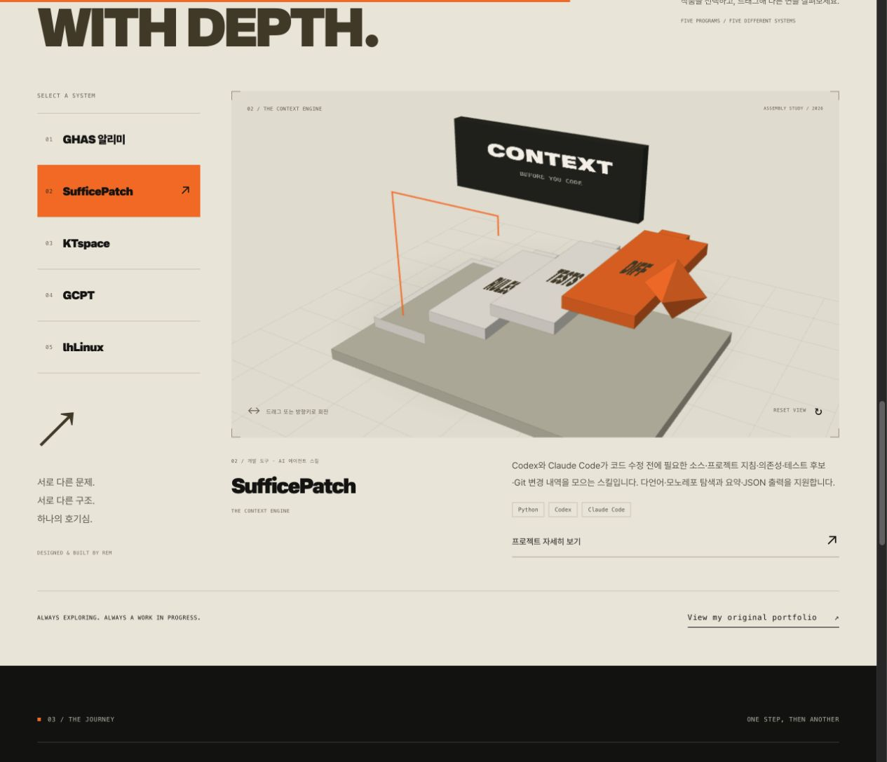
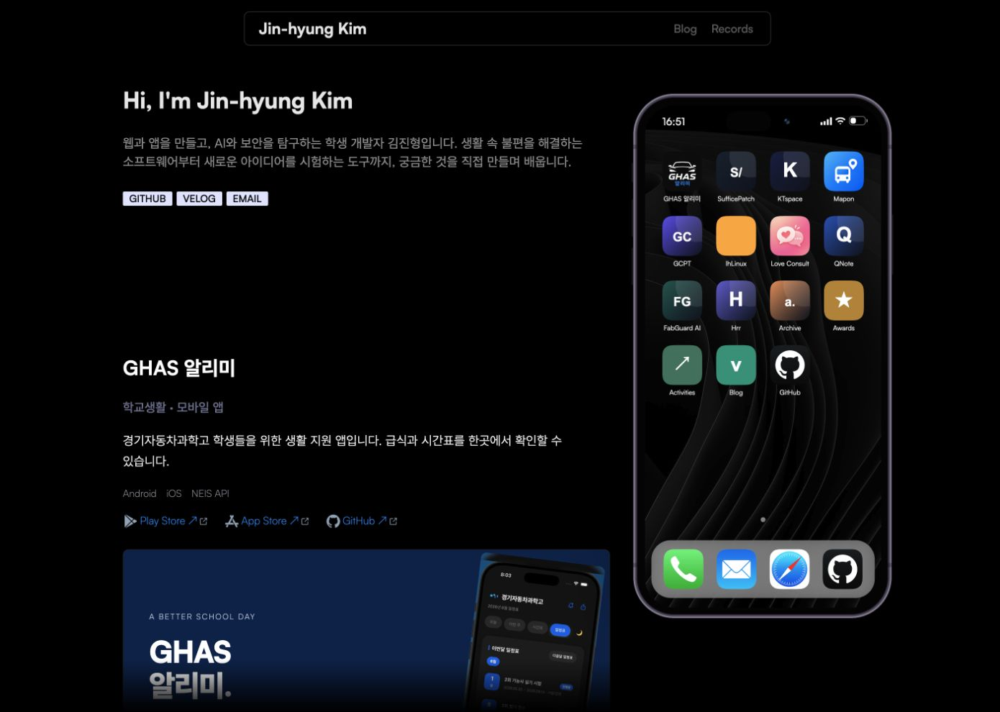
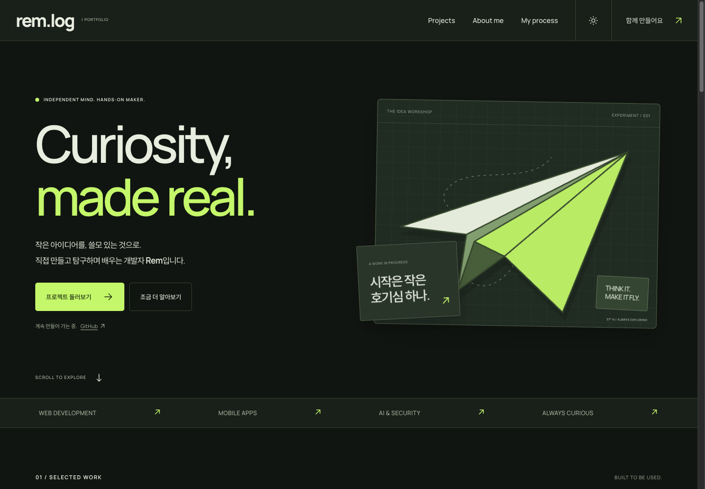
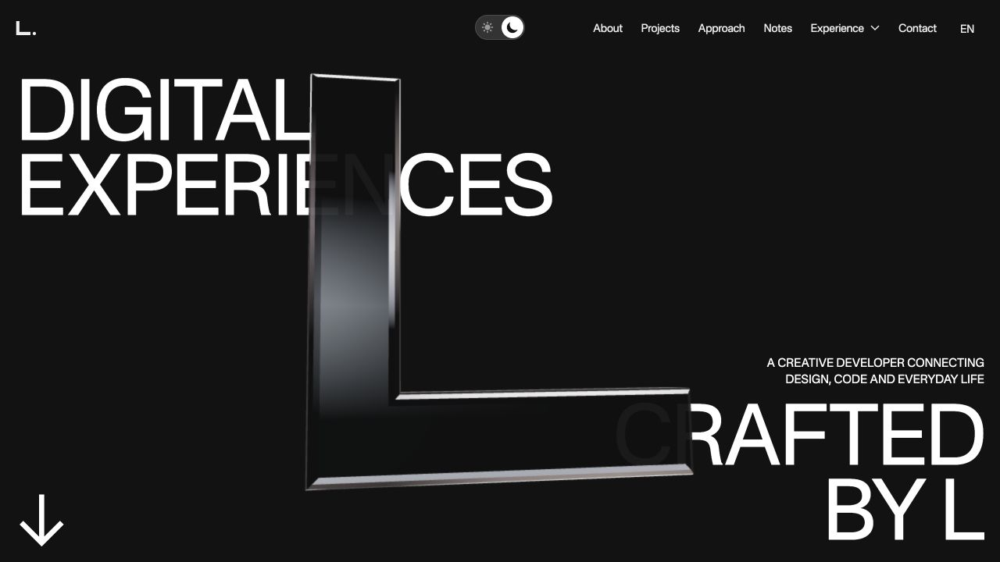
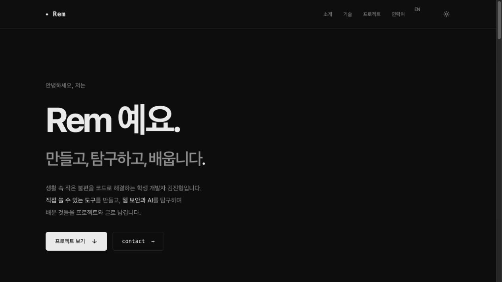
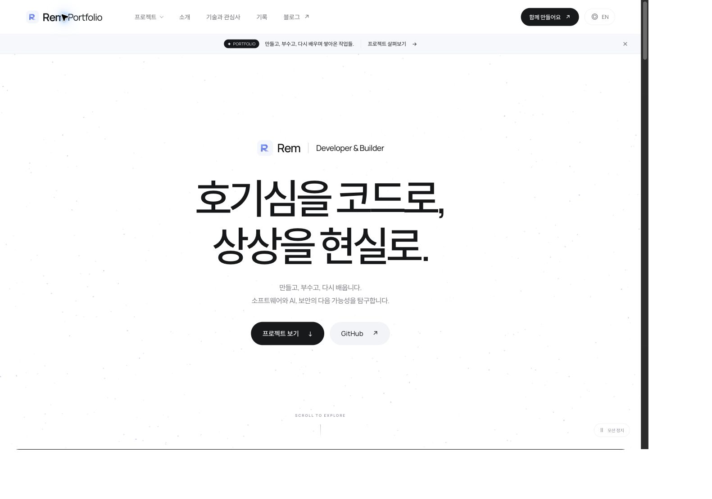
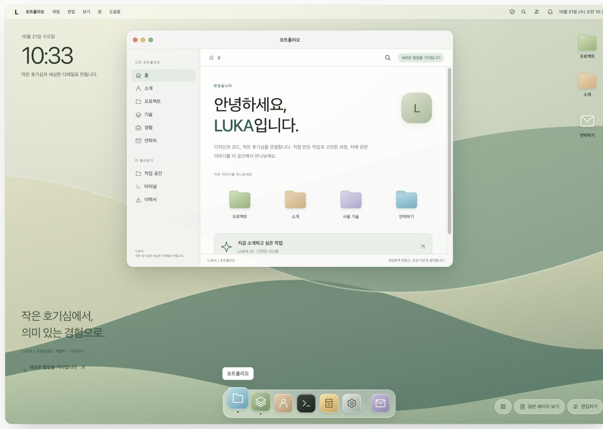
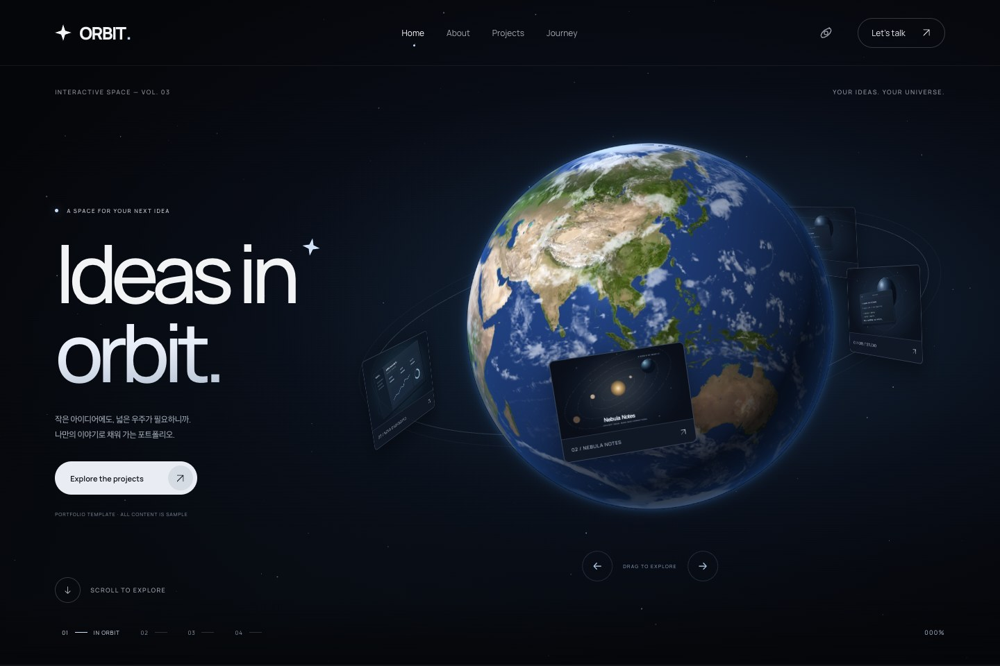
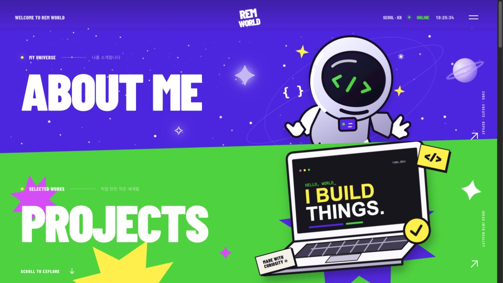

바로 열기EXPLOSION
a.
design.archive
- 9 템플릿
- 0 저장
- 0 준비 중

폭발
phone
비행기
L
렘
구글
애플
우주
월드바로 열기IPHONE
바로 열기PAPER PLANE
바로 열기WEBGL
바로 열기MONOCHROME
바로 열기MINIMAL
바로 열기DESKTOP UI
바로 열기WEBGL
바로 열기VIVID COLORS
아직 저장한 디자인이 없어요.
마음에 드는 템플릿의 책갈피를 눌러 모아보세요.